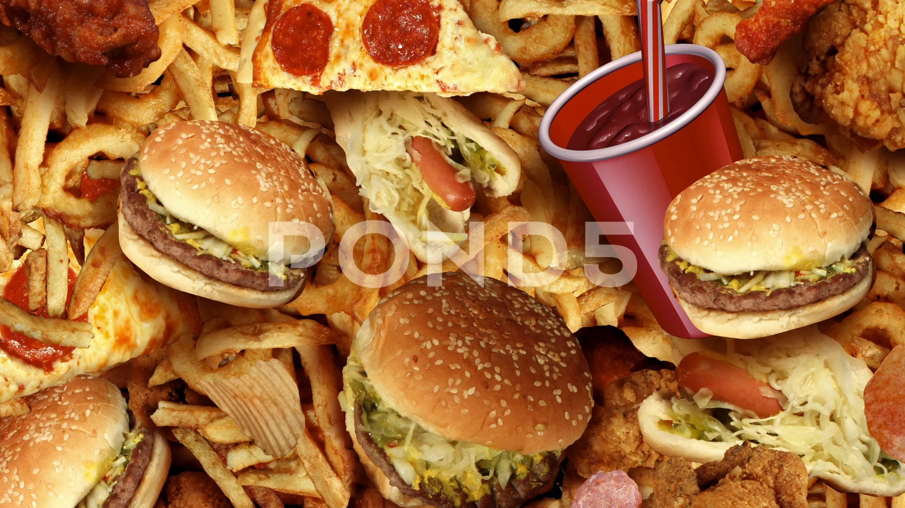

healthy and unhealthy food
-
Healthy food Importantce

Healthy food refers to food that contains the right amount of nutrients to keep our body fit. We need healthy food to keep ourselves fit. Furthermore, healthy food is also very delicious as opposed to popular thinking. Nowadays, kids need to eat healthy food more than ever. We must encourage good eating habits so that our future generations will be healthy and fit. Most importantly, the harmful effects of junk food and the positive impact of healthy food must be stressed upon. People should teach kids from an early age about the same.
-
Effects of unhealthy food
Above all, you can get various nutritional deficiencies when you don’t consume the essential nutrients, vitamins, minerals and more. You become prone to cardiovascular diseases due to the consumption of bad and fat plus sodium. In other words, all this interferes with the functioning of your heart.Furthermore, junk food contains a higher level of carbohydrates. It will instantly spike your blood sugar levels. This will result in lethargy, inactiveness, and sleepiness. A person reflex becomes dull overtime and they lead an inactive life. To make things worse, junk food also clogs your arteries and increases the risk of a heart attack. Therefore, it must be avoided at the first instance to save your life from becoming ruined.